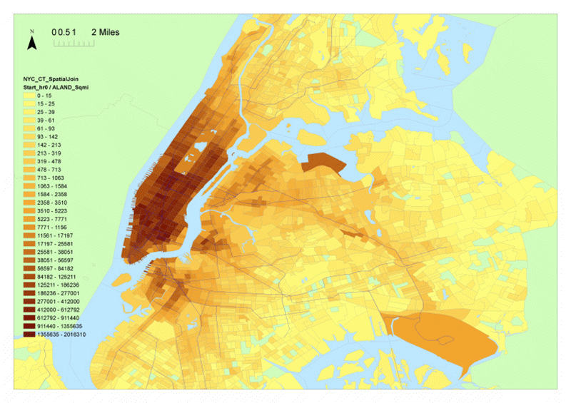

Ci (Jessie) Yang, Ph.D.
 |
|
Data has shaped me; and I have shaped data.
Contact Information
Email: jessie_yang06 (at) yahoo.com
Other email: jessie.yang (at) rutgers.edu
Research Interest
Travel Demand and Supply Modeling, Public Transportation System, Operational Research
Data-driven modeling: Decision-making Predictive Modeling, Time Series Modeling, Spatial Data Mining
Publications
Yang, Ci and Eric Gonzales (2014), “Modeling Taxi Trip Demand by Time of Day in New York City”. Transportation Research Record (In press)
Yang, Ci, Ender Morgul, Eric Gonzales, and Kaan Ozbay (2014), “Comparison of Mode Cost by Time of Day for Non-driving Airport Trips to and from New York City's Pennsylvania Station”. Transportation Research Record (In press)
Yang, Ci (2012) “Modeling Stream Flow Extremes Under Non-time-stationary Conditions”, International Conference on Computational Methods in Water Resources (CMWR), 17-21 June, Champaign, IL
Experience
Rutgers University, Department of Civil and Environmental Engineering, New Brunswick, NJ
Graduate Research Assistant, September 2012-Present
- Assisted Dr. Eric Gonzales and group members on various transportation research projects in a fast-paced environment.
- Gathered literatures and conducted research using large GPS datasets from Taxis to Understand Public Transit Demand and Mode Choice in NYC as a major investigator.
- Designed systematic procedures to clean and map large-scale spatial taxi datasets using ArcGIS, SQL server and Excel.
- Developed a series of numerical and statistical methods to analyze and model taxi demand using SAS, R and Matlab.
- Accomplishments include two first-authored peer-reviewed Journal publications and three conference proceedings.
Texas Environmental Studies and Analysis (TX-ESA), Kingsville, TX
Environmental Data Analyst, February 2010-August 2010
- Worked with a team of 10 on wind farm projects under the supervision of Dr. Margaret Land
- Perform statistical data analysis and assessment on environmental and wildlife data using SAS and Excel.
Texas A&M University, Department of Environmental Engineering, Kingsville, TX
Graduate Research Assistant, August 2007- December 2009
- Assisted Dr. Kuruvilla John and students on air quality research project “Corpus Christi Ozone Near Non-attainment Area Air Quality Research and Planning Activities”.
- Collected and analyzed air quality monitoring data for the purpose of identifying the sources and corresponding contribution of each source of air pollutants particulate matter (PM) and volatile organic compounds (VOC).
Presentations
-
TRB 2014, WASHINGTON, DC
- Modeling Taxi Trip Demand by Time of Day in New York City - TRB 2014, WASHINGTON, DC
- Modeling Stream Flow Extremes Under Non-time-stationary Conditions ITE Northeastern Northeastern District Meeting 2013, NORTHAMPTON, MA
- Analysis of Taxi Demand Versus Subway Accessibility in New York City-
CMWR 2012, CHAMPAIN, IL
- Modeling Stream Flow Extremes Under Non-time-stationary Conditions
Memberships
American Society of Civil Engineers (ASCE)
Education
-
Rutgers University, New Brunswick, NJ
M.S. in Statistics (Statistics), January 2014
Ph.D. in Civil and Environmental Engineering (Transportation studies), January 2015-
Advisor: Professor Eric Gonzales
-
Thesis: Data-driven Modeling of Taxi Trip Demand and Productivity in New York City
- spatial data visulization, management, and data mining
- taxi demand and supply modeling
-
-
Texas A&M University, Kingsville, TX (TAMUK)
M.S. in Environmental Engineering (Air quality modeling), December 2009
-
People’s University of China, Beijing (RUC)
B.S. in Environmental Science, July 2007
Video Sample
A demonstration of my research work
Visualization of New York City 10-month taxi pick up trips aggregated into 24 hours
Visualization of New York City 10-month taxi drop off trips aggregated into 24 hours